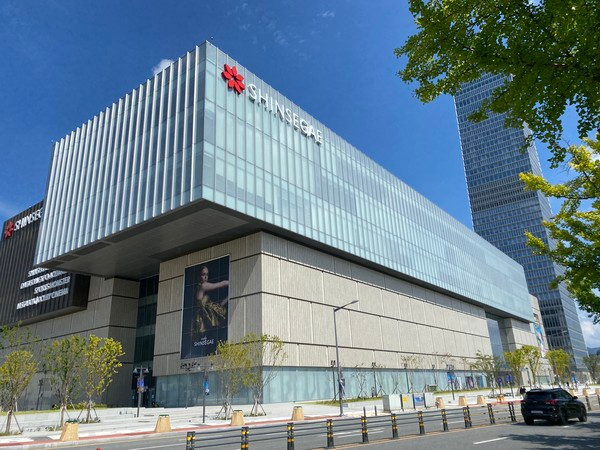
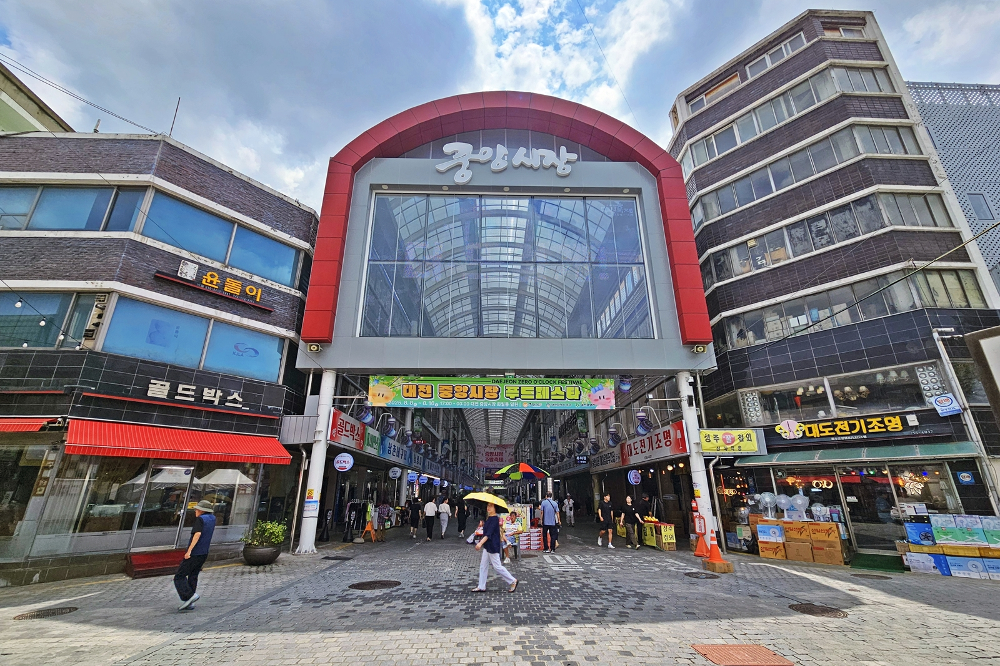
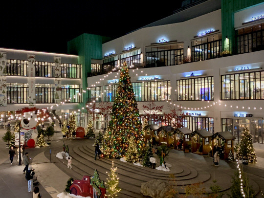
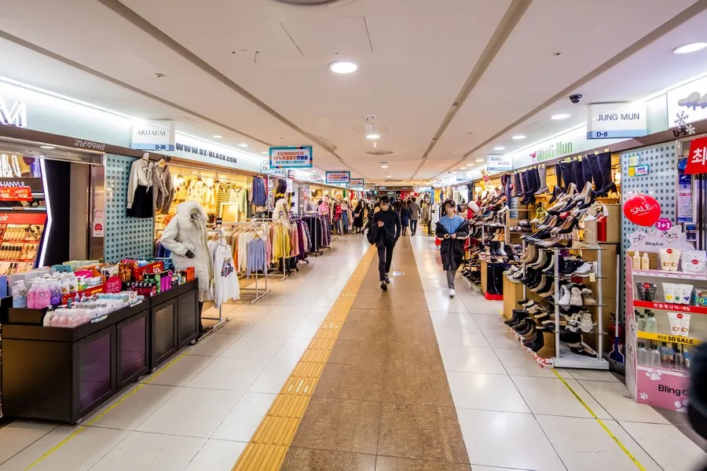

대전의 쇼핑
트렌디한 거리부터 전통시장, 복합 쇼핑 테마 공간까지 대전의 쇼핑 핫플레이스입니다.
_2014-00-00_0.jpg)
대전의 명동이라 불리는 대표적인 쇼핑과 문화의 거리입니다. 의류, 화장품, 패션 잡화 매장들이 밀집해 있으며, 거리 천장에는 거대한 LED 영상 스크린 '스카이로드'가 설치되어 밤마다 환상적인 미디어 아트 쇼가 펼쳐집니다.

갑천변에 우뚝 솟은 중부권 최대 규모의 복합 문화 쇼핑 랜드마크입니다. 럭셔리 패션 브랜드 쇼핑은 물론, 대형 아쿠아리움, 미술 전시관, 그리고 엑스포 타워 꼭대기에 위치한 전망대까지 쇼핑과 과학, 문화를 동시에 즐길 수 있습니다.

대전역 인근에 위치한 100년 전통의 중부권 최대 재래시장입니다. 먹거리 골목에는 대전 명물인 풀빵, 호떡, 만두, 순대 등 다양한 먹거리가 즐비하며, 건어물, 한복, 침구류 등 여러 특화 거리가 조성되어 구경하는 재미가 가득합니다.

유성구 용산동에 자리 잡은 자연 친화적이고 세련된 아웃도어 몰 형태의 프리미엄 아울렛입니다. 합리적인 가격에 유명 해외 명품과 인기 패션 브랜드들을 만나볼 수 있으며, 이국적인 중앙 분수 광장과 정원, 영화관을 갖추어 나들이 코스로도 제격입니다.

대전역에서 옛 충남도청(현 근현대전시관)까지 쭉 이어지는 아시아 최대 규모 수준의 단일층 지하쇼핑몰입니다. 날씨의 영향 없이 쾌적하게 쇼핑할 수 있으며, 가성비 훌륭한 트렌디 의류와 슈즈, 액세서리 매장이 즐비하고 명물 분식점들도 만날 수 있어 늘 활기가 넘칩니다.